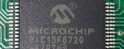

Übersicht
Hier findet sich mein privater Blog und Unterrichtsmaterial für das Fach Digitale Systeme und Computersysteme an der HTL Rankweil.
Alle Inhalte (sofern nicht anders gekennzeichnet) befinden sich unter der CC BY-SA 3.0 DE Lizenz.
Aktuell finden sich folgende Stichwörter:
C Elektronik Verschiedenes Programmieren Webstream Tools Empfehlung
Blog
30.12.2016 | Kommentare | Tag:
Verschiedenes
Spectra Physics Standort Rankweil/Vorarlberg (Österreich) hat derzeit eine Stelle für Elektronik/Softwareentwicklung offen (hier die Stellenanzeige). Da die Stellenanzeigen meist sehr allgemein gehalten sind, möchte ich die Aufgabengebiete unserer Abteilung beschreiben.
Unser Team
Unser Team besteht aus Fachleuten mit Spezialisierung in einem oder mehreren Fachbereichen. Im folgenden ...
Weiterlesen...
13.11.2016 | Kommentare | Tags:
Programmieren, C, Elektronik

Es gibt diese einfachen Tricks Pins zu sparen, Prozessorresourcen zu optimieren oder einfach Kosten zu sparen. Eine
schöne Sammlung dieser Tricks rund um Mikrocontroller hat Microchip zusammengestellt: Compiled Tips 'N Tricks Guide
22.10.2016 | Kommentare | Tag:
Verschiedenes
Am 26. November 2016 ist es wieder soweit: Linuxtag in Vorarlberg!
Ich werde dort zwei Vorträge halten:
Folgende Infos stammen von der Infoseite unter https://www.linuxday.at:
Der LinuxDay in Vorarlberg ist im 4 Ländereck von ...
Weiterlesen...
03.04.2016 | Kommentare | Tag:
Programmieren
Bei jeder Konferenz das gleiche Bild: Kurz vor dem Start eines Vortrags wird deutlich darauf hingewiesen, dass niemand
stehen müsste, wenn alle Plätze in den Reihen gefüllt würden. Teilweise gibt es große Lücken und man fragt sich wieso.
Das Problem ist ein menschliches - viele ...
Weiterlesen...
01.04.2016 | Kommentare | Tags:
Empfehlung, Webstream

Die Längen der Außengrenzen von Österreich, Deutschland und der Schweiz sind in einem wesentlichen Teil nicht
festgelegt. Dieser wesentliche Teil betrifft die Grenzen rund um bzw. durch den Bodensee. Es ist die einzige Gegend in
Europa in der zwischen den Nachbarstaaten keine Grenzen definiert sind.
Zu welchen Ausw ...
Weiterlesen...
31.03.2016 | Kommentare | Tag:
Programmieren

Das Spiel (hier zum Download) habe ich im Alter von 14 geschrieben und
ist eine Sokoban-Variante (siehe Wikipedia). Ich dachte
eigentlich, dass das Spiel verschollen ist, doch Internet sei Dank hab ich es wieder gefunden.
Das Spiel ist ziemlich einfach gestrickt. Man steuert eine Spielfigur mittels Pfeiltasten durch ein Labyrinth ...
Weiterlesen...
30.03.2016 | Kommentare | Tag:
Verschiedenes
Dieser Ausschnitt hängt seit einer Ewigkeit auf meiner Pinnwand. Es hat einen seltsamen Reiz diesen Kommentar
zu lesen. Ich habe den Namen der schreibenden Person unkenntlich gemacht, das originale Kommentar ist aber nach wie vor
online abzurufen.
29.03.2016 | Kommentare | Tag:
Verschiedenes
Der Baum ist mir früher schonmal aufgefallen und die Verletzung ist recht ungewöhnlich. Ich bin mir nicht sicher, ob
nicht eine "mechanische" Beschädigung vorangegangen ist, aber das was der Baum mitmacht ist sicher nicht fein.
Die Hinterseite eines Verkehrsspiegels ist in diesem Fall refelektierend ausgeführt (dumme ...
Weiterlesen...
15.02.2016 | Kommentare | Tags:
Programmieren, C
In C gibt es vier bitweise Operatoren (Details dazu im Skriptum):
- UND Operator -
&
- ODER Operator -
|
- Exklusiv ODER Operator -
^
- INVERTIERUNG -
~
Neben den bitweisen Operatoren gibt es noch die logischen Verknüpfungen, die den bitweisen entsprechen:
- UND Verknüpfung -
&&
- ODER Verknüpfung -
||
- INVERTIERUNG -
!
Hier fehlt offensichtlich die Exklusive ODER Verknüpfung - wieso ...
Weiterlesen...
11.02.2016 | Kommentare | Tags:
Tools, Verschiedenes
Wieso Jubiläen immer nur nach ganzen Jahren feiern? Wieso nicht bei einer Million Sekunden Lebenszeit? Oder bei Tausend Wochen?
Dieses Spreadsheet (LibreOffice Calc Sheet) macht es möglich. Einfach das Datum und die
Uhrzeit bei "Geburt" eintragen, Namen anpassen und ausdrucken.
Interessant ist die logarithmische Verteilung: Hat man eine ...
Weiterlesen...
08.02.2016 | Kommentare | Tags:
Webstream, Empfehlung
Die meisten Webradios scheitern an mindestens einem der folgenden Punkte: Kostenlos, gute Qualität, keine Werbung, ...
oder gute Musik.
Ein Webradio das ich sehr empfehlen kann ist Radio Paradise.
Finanziert wird Radio Paradise mittels Unterstützung durch die Hörer.
31.01.2016 | Kommentare | Tag:
Tools

Abschreiben als solches zu erkennen ist keine einfache Sache, da der Aufwand massiv mit der Anzahl der zu vergleichenden
Arbeiten steigt. Bei 5 Arbeiten sind insgesamt 10 Vergleiche zu machen: Die erste Aufgabe wird mit den vier anderen
verglichen, dann die zweite Arbeit mit den drei verbleibenden, usw.
Mit wdiff ...
Weiterlesen...